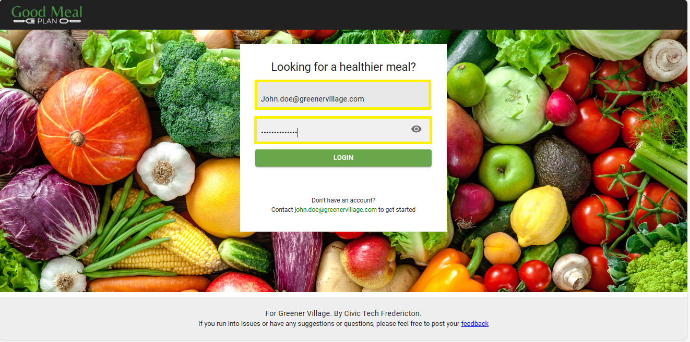

Login To Mealplanner
Overview
The login page allows registered users to sign in to the Mealplanner application to view meals and create personalized meal plans.
Usage
-
Accessing the Login Page
- Navigate to the GoodMealPlan website by typing the URL https://goodmealplan.com/ in the web browser's address bar
- The login page will load, and you'll need to enter your login information
-
Logging In
- Enter your registered email address in the "Email" field
- Enter your password in the "Password" field
- Click on the (LOGIN) button to proceed
 Screenshot: Login Page
Additional Notes
- Ensure you are using a secure and trusted internet connection when entering your login credentials
- For security reasons, it is recommended to log out after each session, especially when using shared devices or public computers
- For any questions or assistance, please contact your administrator